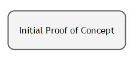
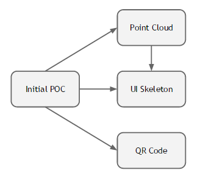
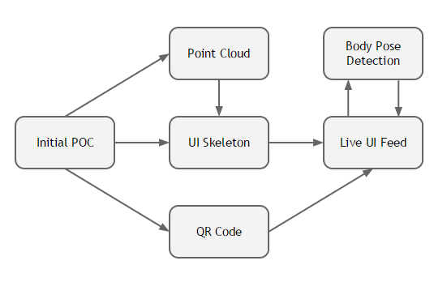
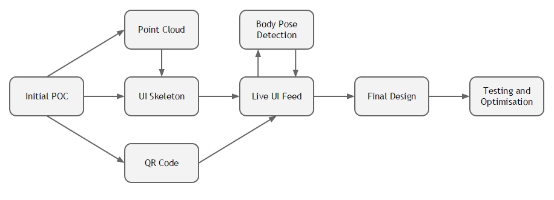
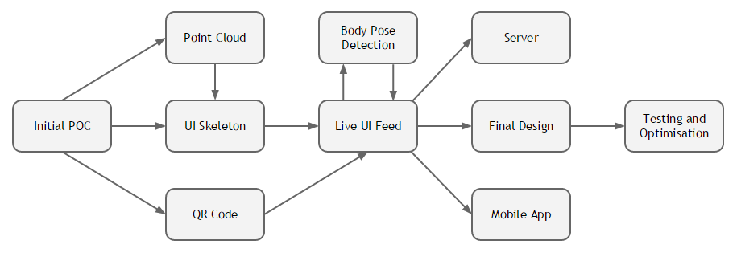

Kinect Bodyscanner
Prototypes
Sensor Modification
To reduce cost, we decided to use the Kinect 2.0 that is available with Xbox One. This meant we had to modify the wiring to make it work with Windows. Originally the Kinect came with a proprietary connector that plugs into Xbox. We had to split the connector into Power and USB 3.0 connectors.

Here are some images of the modification. A step-by-step process can be found here.


Choices
Operating System
We are using the Kinect sensor for this project, naturally leading to our use of Windows, as Microsoft provides drivers and documentation exclusively for their platform. We considered using Linux as open source drivers do exist online; however, advanced configuartion, as well as mainstream adoptance of Windows in businesses and homes makes it the better choice in that regard.
Programming Languages
We were in dilemma as to which language to use for this project. We considered two programming languages: C++ and C#.
-
Pros
- Plenty of 3rd party libraries, especially for 3D point cloud analysis Cons
- Less direct support for Kinect
-
Pros
- Official support from Microsoft
- Official APIs available
- Most tutorials on Kinect in C# Cons
- Not many third party libraries
In the end, we decided to use C# as our main language when programming the sensor. However, this does not prevent us from using third party libraries written in C++ language using a wrapper in C#.
Toolchain
Following the choices made for the operating system and programming language, it was natural to use Microsoft Visual Studio as our IDE, as Microsoft has official tutorials and documentation based around it. We used Git for Version control, as all the members in our groups were familiar with it and we used GitHub to host our Git repo remotely.
Point Cloud
An example of the resulting point cloud at half resolution and in colour:

System Prototype
For our prototype, we had to utilise existing software and design our body scanner accordingly. We spoke to Dr. Tony Ruto who is an expert in this field and is familiar with the existing software. He asked us to provide him with a 3D point-cloud of the body for him to test with the existing software with the aim of extracting body measurements. As a result, term 1 has primarily been focused on mdofiying the Kinects, extracting the point cloud from the Kinect 2.0 sensor and designing the user interface.
System Activity Diagram
Windows UML
{kind=link}
Android UML
{kind=link}
Computing the Point Cloud
In order to extract the point cloud:
- We needed to get the depth data for every pixel, using the depth frame source reader
- Use the Coordinate Mapper class to map the depth frame data to camera space point objects, which store 3D coordinate values for every pixel
- Use BodyIndexFrame to exclude pixels that do not comprise the human body
- Write the 3d coordinates from the remaining camera space points to a file, hence creating a pointcloud
Extracting the Measurements
To extract the measurements, we need to train a classifier algorithm to recognize which points correspond to which parts of the body. However, this has already been done by UCL using the National Sizing Survey, and we have contacted Dr. Tony Ruto for access to this algorithm. We are still awaiting his response.
Key Libraries Used
- Microsoft.Kinect - used when interfacing with the Kinect Sensor
- System.Math - used for mathematical operations such as flooring and distance calculations
- System.Windows.Media - used for calculating colour values and getting RGB formats
- System.IO - used for reading/writing files / exporting the point cloud
Prototype Iterations
Introduction
We went through several iteration cycles when making our product, starting from an initial proof of concept console program, which simply established a connection to the Kinect 2.0 and generated a point cloud to a full measurements gathering solution.
Iteration 1 - Initial Proof of concept
Beginning with a small console application, we mapped out our intentions and familiarised ourselves with the Kinect SDK. At this stage, there was no formal UI or measurement extraction: the first thing we needed to do was capture a reasonable point cloud.
Iteration 2 - QRCode integration, Early UI
We divided our focus between these goals, iterating over a number of XAML-based user-interfaces- and each deriving from our early designs. We assembled a point cloud using the Kinect SDK's CameraSpacePoints, before operating on the resulting structure to ensure its suitability. This process involves applying a rotation matrix to each point, scaling the units and translating before outputting the cloud as finished. At the same time, we were also considering how we ought to display results to the user. We chose a QR code for its ease-of-use and wide recognisability.
Iteration 3 - Live Camera feed, body pose detection
So at this point, we had yet to properly track user movements and provide feedback for what they needed to do. Extending the UI, we added a live feed, displaying bodies recognised by the Kinect. In order to facilitate the scan, we needed users to adopt a particular pose, leading to the development of a body pose detection system that could identify whether or not users’ hands and feet were positioned correctly and how far from the scanner they were standing. Instructions are provided on-screen, explaining if users need to move closer or further away and how they need to stand. Once this is done, the system offers a short countdown before going ahead with the scan.
Iteration 4 - Early ScanMeasure Integration
With the point cloud processed and stored, we next began integrating Dr Tony Ruto’s ScanMeasure software that had previously seen success, but only with the Kinect 1. In conjunction with this software, the system was then able to deliver accurate body measurements, including fields such as height, chest and waist. But our next task was to ensure that users find this information useful and readily available.
Iteration 5 - Server and Companion App integration
Once we had the windows desktop solution, we then started working on the companion android app and the local server for remote execution. On the local server, We chose to also implement a straightforward, and easy to extend RESTful API framework written in PHP. Some of the functionality of the server includes generating a unique ID number based on server time, which is later used to generate the QR code as well as remotely uploading the generated pointcloud vrml files using FTP. This also allowed the integration of ScanMeasure to be moved from the windows app to the Server to allow for remote execution. Similarly we also created a companion android app which could scan QR codes generated by the server and poll the server at frequent intervals in order to get back results, Display them to the User and allow for the saving of measurements; as well as an incognito mode which doesn't save any user measurements.
Design Patterns
Observer
We use the observer pattern in Android as well as the Windows application. We used the pattern mainly for the callbacks. For example, the KinectSensorWrapper class in Windows uses an event and a delegate to implement the pattern. The event keeps track of all the pointers to functions that are subscribed to the callback. The delegate enforces specific parameters and return values for functions to keep things modular - similarly to an interface in java. This allows the KinectSensorWrapper to notify all 'observers' when a frame arrives. In turn, the KinectWindow is able to process data-frames as and when they are available, updating the BodyTracker and controls accordingly. A similar implementation is done for the ServerConnect class in windows, where all observers are notfied when the server responds. FInally, in Android, the same pattern is implemented using java interfaces.
Singleton (And back again)
When the BodyTracker class was first created, we knew that it would be repeatedly accessed by the scan window and so intended to make it a single, goto class whenever a new data frame arrived from the sensor. We did not want to have to reinstantiate the class repeatedly after short intervals and since the Singleton design pattern seemed to fit, we chose that isntead of associating the BodyTracker with the KinectWindow as an instance variable. However, upon review, this introduced a few problems: firstly, the BodyTracker was now much harder to test and secondly, it was not the best move for the future as there could potentially be many BodyTrackers should the application needs change further down the line. Critically, the BodyTracker, in its previous state, had given rise to concerns over coupling and adaptability so it made sense to address these issues with an update. Before, the BodyTracker had been forcing itself onto the handling of the KinectWindow's UI and would need to be constantly updated of who it should be trying to modify since KinectWindows could come and go whereas the BodyTracker instance was a static singleton. Now, however, the BodyTracker is a member of the KinectWindow and performs a purely monitoring and declarative role for good measure.